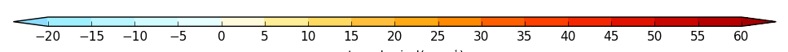

version 2.1 changes¶
Rolling set of small additions and bug fixes.
1. Log pressure axis labelling¶
Log pressure axis labelling was changed from the in-built Matplotlib labelling with used 10^3, 10^2 10^1 to 1000, 10, 1.
Done
2. Rotated grid axis labelling¶
Missing longitude and latitude labels were added to rotated pole plots.
Done
3. cscale - uniform keyword added¶
When a divergent colour scheme is used such as in example 4 in the gallery the default colour scale is stretched so that blues are below zero and reds above zero. When the number of colours above and below differ quite markedly this can give undue emphasis to data by having too strong colours in the above or below zero scale. A new keyword was introduced, uniform=True (or False), to address this issue. The default is now uniform=True for divergent data contour plots where no user colour scale has been defined:
{kind=link}
Use:
:: cfp.setvars(cs_uniform=False)
to revert to the previous behaviour.
4. mapset - new projections added¶
Added Mercator, Lambert Conformal, Orthographic and Robinson projections. See the Basemap documentation at http://matplotlib.org/basemap/users/mapsetup.html for calling parameters.
Done
5. lineplot - axis labelling renamed¶
xname and yname have been depreciated in favour of xlabel and ylabel. This change was made to be consistent with xlabel and ylabel as used in the con and vect routines.
Done
6. Cropped area on map lcc projections¶
Lambert conformal projections can now be cropped as in the following code:

For a corresponding southern hemisphere plot use:
Done
7. Better determination of up on the Z axis¶
The CF metadata attribute of postitive for the Z coordinate is now used in the con and lineplot routines.
Done
9. con - colors option for contour lines¶
con - added colors keyword for the contour lines. This keyword takes a single colour or a list of colours. The default is ‘k’ or black’
Done
10. con - lines=True now the default¶
Within con the lines=True parameter is now the default. This change was made due to the complex and somewhat obscure logic in the blockfill section of code. The change will affect blockfill plots which were previously drawn with no lines using blockfill=True. The syntax for blockfill with no lines is now blockfill=True, lines=False.
Done
11. con - colorbar logic correction¶
A correction was made to the colorbar logic so that it works properly when fill=False is selected.
Done
12. cscale - new colour scale added¶
A new colour scale was added - brown to blue - BrBG.